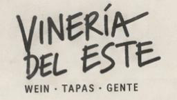
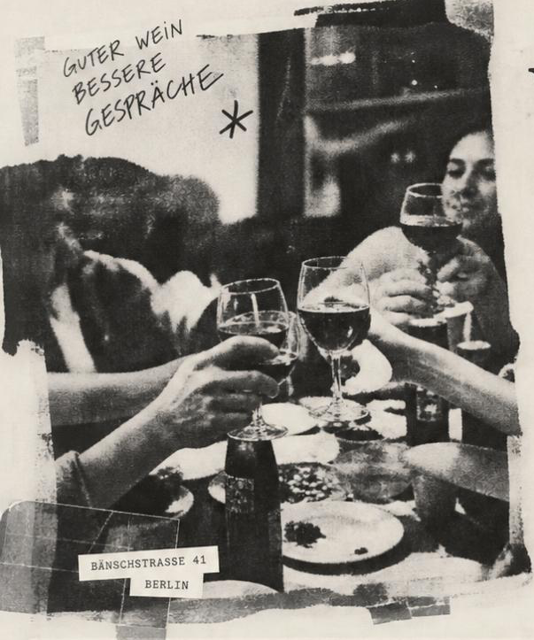
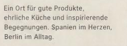
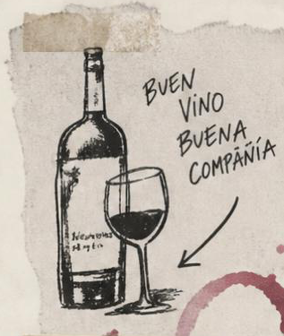
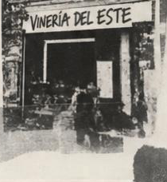
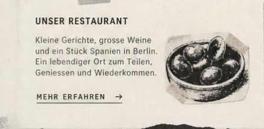
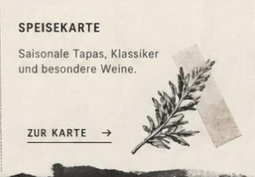
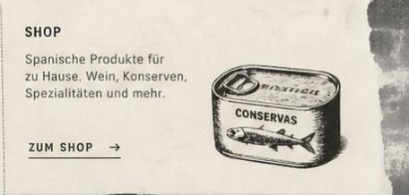
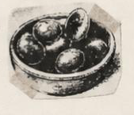
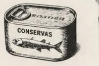

Vineria del Este · Wein. Tapas. Leben.










Vineria del Este · StartseiteUnser RestaurantSpeisekarteWeineÜber unsKontaktSpeisekarte ansehenUnser Restaurant · mehr erfahrenZur KarteRoute planenShopZur TiendaZum ShopTisch reservierenTisch reservierenInstagramImpressumDatenschutzAGBVersandWiderrufADRESSE
Bänschstraße 41
10247 Berlin
ÖFFNUNGSZEITEN
Di–Do ab 16 · Fr–Sa ab 15
So 12–18 Uhr
Mo geschlossen
Ein Ort für gute Produkte, ehrliche Küche und inspirierende Begegnungen. Spanien im Herzen, Berlin im Alltag.